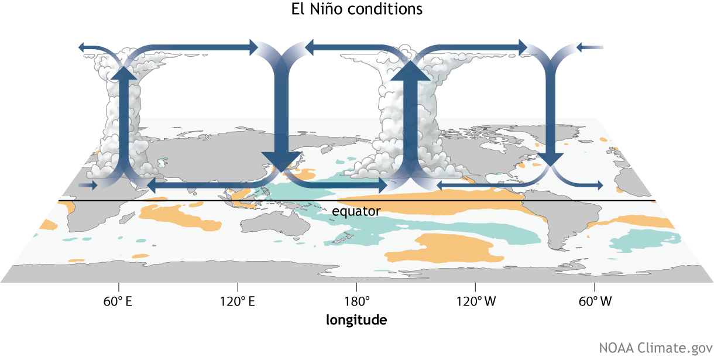
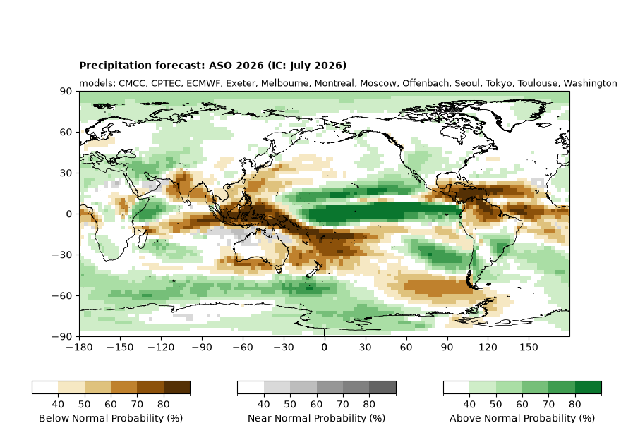
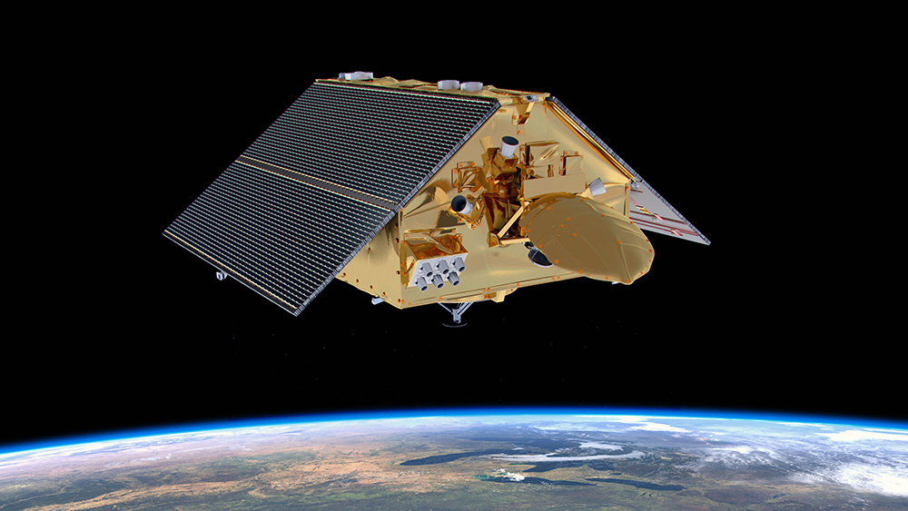

Images connecting the Pacific Ocean with land-carbon risks.
Images are obtained from their original NASA, NOAA and WMO sources, with dates, attribution and reuse terms recorded below. The ocean photograph is a background illustration; the 2023 drought and 2015 fire images are historical examples, not evidence of 2026 land conditions.
 Pacific Ocean from the International Space Station16 January 2026
Pacific Ocean from the International Space Station16 January 2026NASA / International Space Station. Image ID: iss074e0089803.
Pacific Ocean west of Chile. Used as a setting for the site, not as a diagnosis of El Niño.
Original source · NASA media-use guidelinesDisplay changes: resized for the web; background and card views use a layout crop. No recolouring of satellite data. The developing 2026 El Niño8 June 2026; published 18 June 2026
The developing 2026 El Niño8 June 2026; published 18 June 2026NASA Earth Observatory image by Lauren Dauphin; processed by Josh Willis, Severin Fournier and Kevin Marlis / NASA / JPL-Caltech, using modified Copernicus Sentinel data processed by ESA.
Sea-surface height anomalies from Sentinel-6 Michael Freilich. Reds indicate higher-than-average sea level; this is not a map of land-carbon losses or a sea-surface temperature map.
Original source · NASA media-use guidelinesDisplay changes: resized for the web; background and card views use a layout crop. No recolouring of satellite data. Historical drought on the Rio Negro3 October 2023; published 18 October 2023
Historical drought on the Rio Negro3 October 2023; published 18 October 2023NASA Earth Observatory image by Wanmei Liang, using Landsat data from the U.S. Geological Survey.
Low water near Manaus during the 2023 drought. Illustrates a possible pathway of ecosystem stress, without assigning all of that event to El Niño.
Original source · NASA media-use guidelinesDisplay changes: resized for the web; background and card views use a layout crop. No recolouring of satellite data. Historical smoke and fires over Borneo24 September 2015; published 6 January 2016
Historical smoke and fires over Borneo24 September 2015; published 6 January 2016NASA image by Jeff Schmaltz, LANCE / EOSDIS Rapid Response; Terra / MODIS.
Smoke and detected fire hotspots during the 2015 El Niño. Red outlines identify thermal hotspots, not the total burned area.
Original source · NASA media-use guidelinesDisplay changes: resized for the web; background and card views use a layout crop. No recolouring of satellite data.
How El Niño shifts tropical circulationArticle published 1 August 2014; media record dated 5 October 2021NOAA Climate.gov drawing by Fiona Martin.
Generalized December–February Walker circulation anomalies during El Niño, overlaid on typical sea-surface temperature anomalies. An educational schematic, not a forecast for 2026.
Original explanation · Original image · NOAA Climate.gov reuse termsDisplay changes: scaled to fit the card; the complete diagram is retained. Climate.gov permits reuse of its credited content with proper attribution; no NOAA endorsement is implied.
WMO seasonal precipitation outlookForecast: August–October 2026; initialization: July 2026World Meteorological Organization (WMO), multi-model seasonal forecast.
Figure from the WMO report published 31 July 2026, updated 10 September 2026. Probabilities describe below-, near- and above-normal precipitation; they are not probabilities of carbon loss or fire. This is a dated agency outlook, separate from our research forecast.
Original source · WMO copyright and reproduction termsDisplay changes: scaled to fit; the full figure and its legends are retained. WMO authorizes reproduction of short excerpts, figures and photographs from its website with acknowledgment of the original source. No Creative Commons licence is asserted.
Observing the ocean from spaceIllustration published 10 September 2020Courtesy NASA/JPL-Caltech.
Artist’s rendering of Sentinel-6 Michael Freilich with its solar panels extended. Illustrates satellite observation as an external data resource; this is not a photograph, a 2026 observation, or an input to our land-carbon and fire models.
Original source · JPL image-use policyDisplay changes: card view uses a layout crop; colours are unchanged. Used with the credit required by JPL’s image-use policy; no endorsement is implied.
Reuse terms
NASA Earth Observatory and ISS images follow NASA’s media-use guidelines; the spacecraft illustration follows JPL’s image-use policy. NOAA Climate.gov content is reused with attribution under its published FAQ, and the WMO figure under its short-excerpt and figure reproduction terms. Third-party material retains its own rights. These images are not labelled as Creative Commons works. The 2026 Sentinel-6 visualisation retains the Copernicus / ESA and NASA / JPL-Caltech attribution supplied by the original source.
Research figures
The carbon and fire figures come from our own research paper and supplement. Panel letters have been removed for web presentation. The small background area obscured by the letter on the fire map was locally repaired. Original figure colours, units and relevant legends are retained.
Institutions and external sources
The institution strip displays Tsinghua University, LSCE / Université Paris-Saclay and the University of Exeter. WMO, NOAA, NASA and Nature identify external information or image sources; their inclusion does not imply endorsement.
The page layout takes inspiration from Low latency Global Carbon Budget. Its photographs are not used in this version.